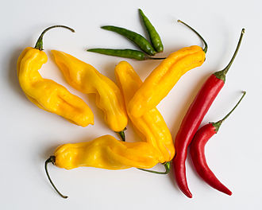
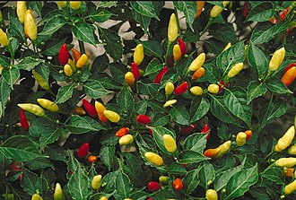
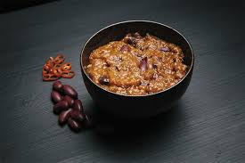

All About Chilli
"Red Chillies" redirects here. For the film, see Red Chillies (film). "Hot pepper" redirects here. For other uses, see Hot pepper (disambiguation). For the dish often called simply "chili", see Chili con carne. For the band, see Red Hot Chili Peppers. Chili peppers, also spelled chile or chilli, are varieties of the berry-fruit of plants from the genus Capsicum, which are members of the nightshade family Solanaceae, cultivated for their pungency. Chili peppers are widely used in many cuisines as a spice to add "heat" to dishes. Capsaicin and related compounds known as capsaicinoids are the substances that give chili peppers their intensity when ingested or applied topically. Chili peppers exhibit a wide range of heat and flavors. This diversity is the reason behind the availability of different types of paprika and chili powder, each offering its own distinctive taste and heat level. Chili peppers are believed to have originated somewhere in Central or South America and were first cultivated in Mexico. After the Columbian Exchange, many cultivars of chili pepper spread around the world and were used for both food and traditional medicine. This led to a wide variety of cultivars, including the annuum species, with its glabriusculum variety and New Mexico cultivar group, and the species of baccatum, chinense, frutescens, and pubescens. Cultivars grown in North America and Europe are believed to all derive from Capsicum annuum and have white, yellow, red, or purple to black fruits. In 2019, the world's production of raw green chili peppers amounted to 38 million tons, with China producing half.
History
Origins
Capsicum plants originated in modern-day Peru & Bolivia and have been a part of human diets since about 7,500 BC. They are one of the oldest cultivated crops in the Americas. Origins of cultivating chili peppers have been traced to east-central Mexico some 6,000 years ago, although, according to research by the New York Botanical Garden Press in 2014, chili plants were first cultivated independently across different locations in the Americas including highland Peru & Bolivia, central Mexico, and the Amazon. They were one of the first self-pollinating crops cultivated in Mexico, Central America, and parts of South America. Peru has the highest variety of cultivated Capsicum diversity because it is a center of diversification where varieties of all five domesticates were introduced, grown, and consumed in pre-Columbian times. The largest diversity of wild Capsicum peppers is consumed in Bolivia. Bolivian consumers distinguish two basic forms: ulupicas, species with small round fruits including C. eximium, C. cardenasii, C. eshbaughii, and C. caballeroi landraces; and arivivis with small elongated fruits including C. baccatum var. baccatum and C. chacoense varieties.
Distribution to Europe
When Christopher Columbus and his crew reached the Caribbean, they were the first Europeans to encounter Capsicum. They called them "peppers" because, like black pepper of the genus Piper known in Europe, they have a spicy, hot taste unlike other foods. Chilis were first brought back to Europe by the Spanish, appearing in Spanish records by 1493. Unlike pepper vines of the genus Piper which grow in the tropics, chilis could be grown in temperate climates. By the mid-1500s, they had become a very common garden plant in Spain and was incorporated into numerous dishes. They also spread into other areas, appearing in Italy by 1526, Germany in 1543, and the Balkans by 1569 where it was processed into the now-ubiquitous paprika.
Distribution to the rest of the world
The rapid introduction of chilis to Africa and Asia was likely through the Portuguese and Spanish traders in the 16th century, though the details are unrecorded. The Portuguese introduced it first to Africa and the Arabia, and then to their colonies and trading posts in Asia, including Goa, Sri Lanka, and Malacca. From there, it spread to neighboring regions in South Asia and western Southeast Asia via local trade and natural dispersal. At around the same time, the Spanish also introduced chilis to the Philippines, where it spread to Melanesia, Micronesia, and other Pacific Islands via their monopoly of the Manila galleons. Their spread to East Asia in the late 16th century is less clear, but was likely also through local trade or through Portuguese and Spanish trading ports in Canton, China and Nagasaki, Japan. In 21st-century Asian cuisine, chili peppers are commonly used across many regions.
Production
In 2020, 36 million tonnes of green chilies and peppers (counted as any Capsicum or Pimenta fruits) were produced worldwide, with China producing 46% of the total.
Species and cultivars
There are five domesticated species of chili peppers:
- Capsicum annuum includes many common varieties such as bell peppers, wax, cayenne, jalapeños, Thai peppers, chiltepin, and all forms of New Mexico chile.
- Capsicum frutescens includes tabasco, malagueta, labuyo, piri piri, and kambuzi.
- Capsicum chinense includes the hottest peppers such as the naga, habanero, Datil and Scotch bonnet.
- Capsicum pubescens includes the South American rocoto peppers.
- Capsicum baccatum includes the South American aji peppers.
Though there are only a few commonly used species, there are many cultivars and methods of preparing chili peppers that have different names for culinary use. Green and red bell peppers, for example, are the same cultivar of C. annuum. Unripe peppers are green (although peppers that do not turn red on ripening have been bred). In the same species are the jalapeño, the poblano (which, when dried, is referred to as ancho), New Mexico, serrano, and other cultivars. Peppers are commonly broken down into two groupings: bell peppers (UK: sweet peppers) and hot peppers. Most popular pepper varieties are seen as falling into one of these categories or a cross between them.
Intensity
The substances that give chili peppers their pungency (spicy heat) when ingested or applied topically are capsaicin (8-methyl-N-vanillyl-6-nonenamide) and several related chemicals, collectively called capsaicinoids. The quantity of capsaicin varies by variety, and depends on growing conditions. Water-stressed peppers usually produce stronger pods. When a habanero plant is stressed, by absorbing low water for example, the concentration of capsaicin increases in some parts of the fruit. When peppers are consumed by mammals such as humans, capsaicin binds with pain receptors in the mouth and throat, potentially evoking pain via spinal relays to the brainstem and thalamus where heat and discomfort are perceived. However, birds are unable to perceive the hotness and so they can eat some of the hottest peppers. The intensity of the "heat" of chili peppers is commonly reported in Scoville heat units (SHU), invented by American pharmacist Wilbur Scoville in 1912. Historically, it was a measure of the dilution of an amount of chili extract added to sugar syrup before its heat becomes undetectable to a panel of tasters; the more it has to be diluted to be undetectable, the more powerful the variety, and therefore the higher the rating. The modern method is a quantitative analysis of SHU using high-performance liquid chromatography (HPLC) to directly measure the capsaicinoid content of a chili pepper variety. Pure capsaicin is a hydrophobic, colorless, odorless, and crystalline-to-waxy solid at room temperature, and measures 16,000,000 SHU. Capsaicin is produced by the plant as a defense against mammalian predators and microbes, in particular a fusarium fungus carried by hemipteran insects that attack certain species of chili peppers, according to one study. Peppers increased the quantity of capsaicin in proportion to the damage caused by fungal predation on the plant's seeds.
-


Recipes
Fruity Chilli
- Prep Time: 20 minutes
- Cook Time: 15 minutes
- Total Time: 35 minutes
- Servings: 8
Ingridients
- 2 (14 ounce) cans tomato sauce
- 2 (15 ounce) cans kidney beans, rinsed and drained
- 2 tablespoons chili powder
- 1 tablespoon white sugar
- 1 pinch cayenne pepper (Optional)
- 1 pound ground beef
- 1 teaspoon cooking oil
- ½ red onion, chopped
- 1 banana pepper, chopped
- 1 apple - peeled, cored, and chopped
- 1 peach - peeled, pitted, and chopped
Directions
Step one:
Combine the tomato sauce, kidney beans, 2 tablespoons chili powder, 1 tablespoon sugar, and cayenne pepper in a large sauce pan; bring to a simmer over low heat.
Step two:
Place a large skillet over medium-high heat; place the ground beef in the skillet; season with 2 tablespoons chili powder, 1 tablespoon sugar, and the cayenne pepper; cook until brown; add to the sauce mixture.
Step three:
Heat the oil in a small skillet over medium-high heat; cook the onion in the oil until slightly browned; add to the sauce mixture, along with the apple, peach, and banana pepper. Allow to simmer another 1 to 2 minutes until hot.
The Best Classic Chilli Recipe
- Prep Time: 5 minutes
- Cook Time: 25 minutes
- Total Time: 30 minutes
- Servings: 6
Ingridients
- 1 tablespoon olive oil
- 1 medium yellow onion -diced
- 1 pound 90% lean ground beef
- 2 1/2 tablespoons chili powder
- 2 tablespoons ground cumin
- 2 tablespoons granulated sugar
- 2 tablespoons tomato paste
- 1 tablespoon garlic powder
- 1 1/2 teaspoons salt
- 1/2 teaspoon ground black pepper
- 1/4 teaspoon ground cayenne pepper* -optional
- 1 1/2 cups beef broth
- 1 (15 oz.) can petite diced tomatoes
- 1 (16 oz.) can red kidney beans, drained and rinsed
- 1 (8 oz.) can tomato sauce
Directions
Step one:
Add the olive oil to a large soup pot and place it over medium-high heat for two minutes. Add the onion. Cook for 5 minutes, stirring occasionally.
Step two:
Add the ground beef to the pot. Break it apart with a wooden spoon. Cook for 6-7 minutes, until the beef is browned, stirring occasionally.
Step three:
Add the chili powder, cumin, sugar, tomato paste, garlic powder, salt, pepper, and optional cayenne. Stir until well combined.
Step four:
Add the broth, diced tomatoes (with their juice), drained beans, and tomato sauce. Stir well.
Step five:
Bring the liquid to a low boil. Then, reduce the heat (low to medium-low) to gently simmer the chili, uncovered, for 20-25 minutes, stirring occasionally.
Step six:
Remove the pot from the heat. Let the chili rest for 5-10 minutes before serving.

CHILE PEPPERS: FRUIT OR VEGTABLE?
What do you think? Are chile peppers a fruit or a vegetable?
When you think of fruit, apples, peaches, or grapes might come to mind. But how about chile peppers? While they don’t closely resemble oranges or watermelons, all hot peppers are actually fruits.
Botanists define fruit as the seed-bearing structures on flowering plants. Chile peppers are the product of blooming flowers. Cutting one open demonstrates they obviously house seeds. Therefore, peppers classify as fruit. To get even more technical, they are actually berries. This is because they hold multiple seeds within one fleshy fruit. To botanists, a berry is a fleshy fruit that has numerous seeds on the inside, embedded in the flesh of the ovary, such as a blueberry. This means all of these other items are berries as well: tomatoes, eggplants, grapes, persimmons, and chile peppers.
It’s a little easier to make the connection when you take a look at some ornamental chile peppers, like Black Pearl peppers, the Tennessee Teardrop , or the Bolivian Rainbow Pepper. These chile peppers have a more fruit-like appearance than other types of hot peppers.
Unlike “fruit,” the word “vegetable” has no botanical meaning and refers to any non-fruit part of a plant that humans consume. This could be the stem, leaf, root, or nearly anything. Many cultures use the leaves of hot pepper plants, which are a little bitter but not spicy, in a variety of dishes.
Cultural and culinary conventions largely determine which foods are considered vegetables for everyday purposes. Hot peppers and other members of the nightshade family, such as tomatoes and eggplants, are savory fruits used as culinary vegetables and wouldn’t be standard additions to a fruit salad.
To confuse things even further, when nutritionists make dietary recommendations about fruits and vegetables, they tend to make their distinctions based on the sugar content of the food, considering zucchini and tomatoes vegetables because they are lower in sugar.
So why are chile peppers so dramatically dissimilar to other fruits?
Most fruit is predominantly sweet and tangy while chile peppers are fiery. The answer could be evolutionary. What’s the evolutionary advantage of a fleshy fruit? Animals like to eat them and deposit the indigestible seeds somewhere far away from the original plant.
Humans and other mammals were never meant to eat chile peppers at all. Capsaicin targets a mammalian pain receptor, TRPV1 (pronounced TRIP-vee one), also known as the capsaicin receptor. The hot peppers’ deterrent is to produce the sensation of burning on just about any surface they come in contact with, your mouth, your eyes, your hands. But that simply wasn’t enough to stop humans from eating them! Humans are the only mammals known to eat hot peppers. Other species don’t seem to have an appreciation for the heat.
Birds, however, do not have the same pain receptors we do and regularly eat hot peppers because they can’t feel the burn. This means that spicier plants deterred land-bound mammals, leaving more fruit (peppers, in this case) for the unaffected airborne birds to eat. As a result, spicier plants had more chances to reproduce and get spread far and wide by birds.
Fun Facts about CHILLI
Chili pepper fruits at different stages of development and maturation. Representative photographs of chili pepper fruits at 10, 20, 30, 40, 50 and 60 days after anthesis (DAA).
The Carolina Reaper is a cultivar of the Capsicum chinense plant. Developed by American breeder Ed Currie, the pepper is red and gnarled, with a bumpy texture and small pointed tail.
Its name says it all: a Thai chilli shaped like a pumpkin. The hot, thick-fleshed fruit are flattened and strongly ribbed.
Red chilli is a spicy fruit and is widely used in various Indian cuisine preparations and is also known as a wonder spice. It is used both fresh as well in its dried form.
Apart from giving an extra kick of spice, or sprucing up your meals, chilli peppers also offer tons of health benefits.
Chilli’s are often used in all different kinds of recipes to add extra flavour to a meal. There are so many different kinds, all with their own specific tastes and spiciness, coming from around the world.
1. Cut the chilli in half lengthways through the stem. Scrape away the seeds and pale ribs.
2.Slice across the chilli into fine julienne strips.
Red chilli peppers are popular as a cooking ingredient and give a hot flavour to dishes. However, they also have several applications for health and wellbeing.